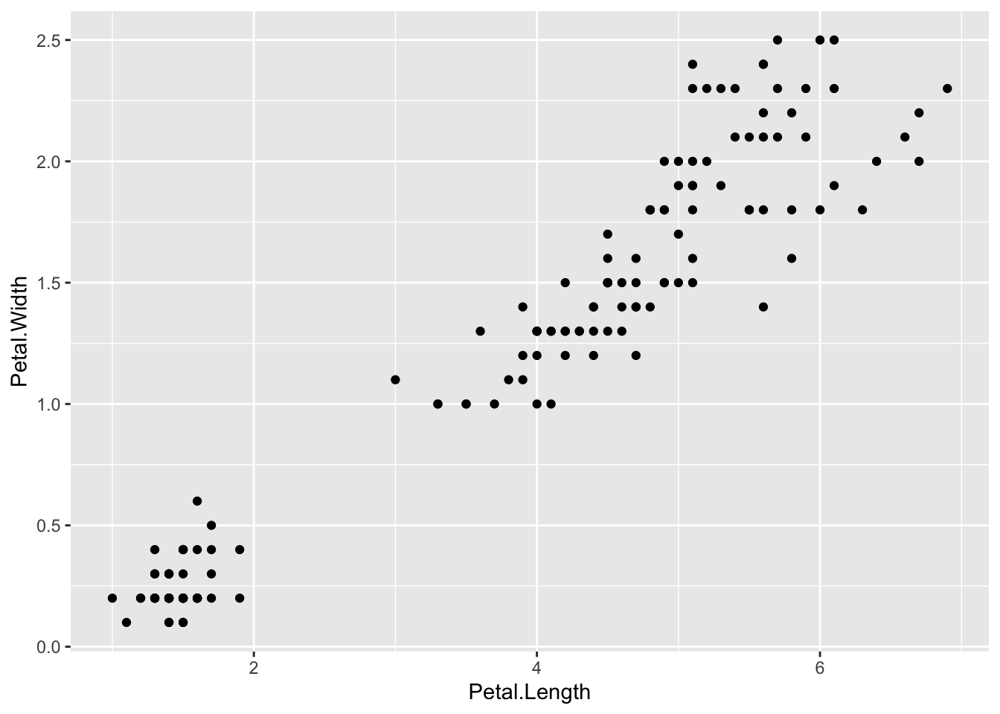
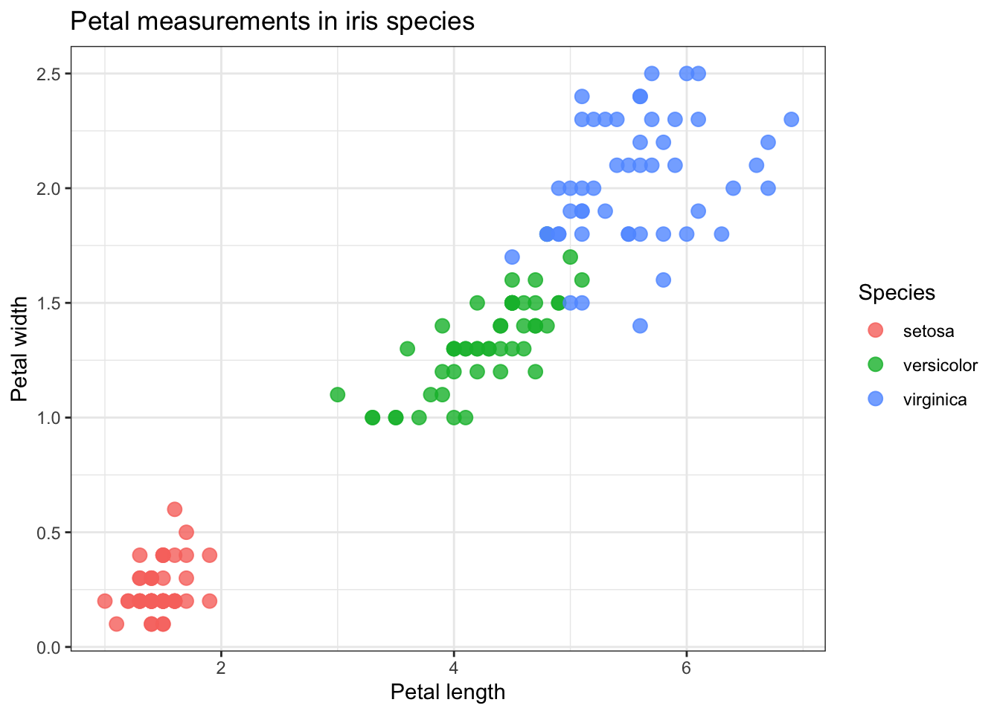
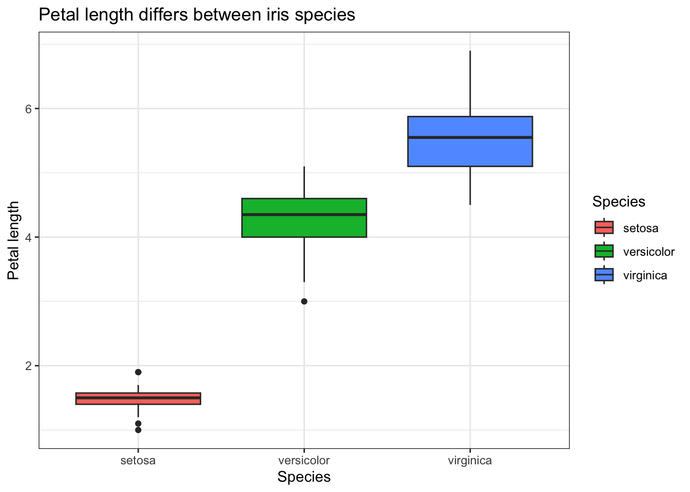
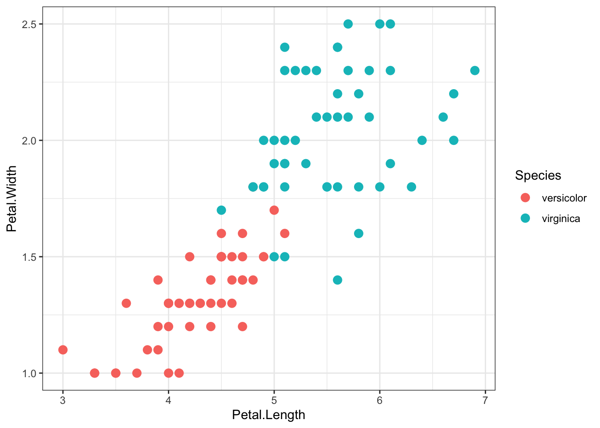
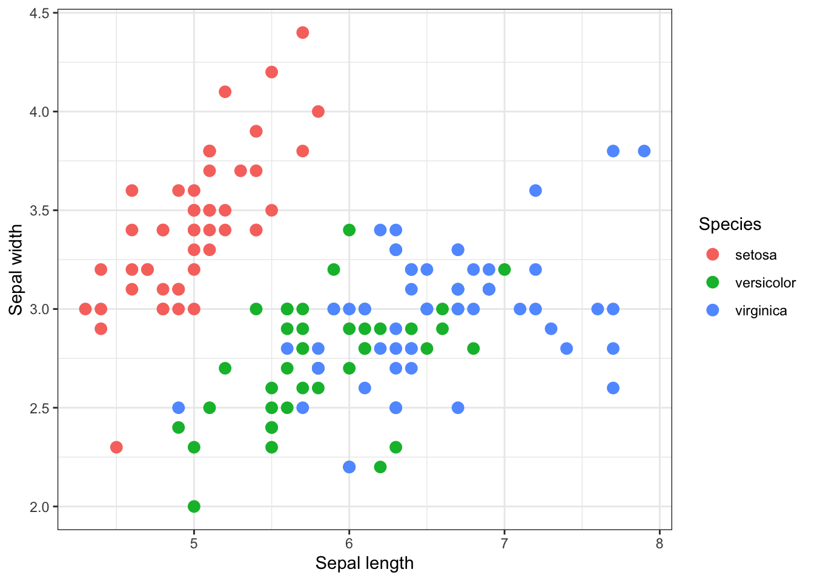

2 + 2
10 / 2
sqrt(25)HAAM Summer School – Introduction to R
1. Objectives
By the end of this session, you should be able to:
- Run simple R commands in RStudio.
- Understand objects, functions, vectors, and data frames.
- Inspect and subset a dataset using base R.
- Read (load) and write (save) files/datasets.
- Use basic
dplyrcommands to filter and subset data. - Create plots using
ggplot2. - Save a plot as an image file.
2. Getting started with R & RStudio
What is R?
R is a language and environment for statistical programming which includes statistical computing and graphics.
RStudio
It is an integrated development environment (IDE) for the R programming language.
We will now open RStudio and learn how to navigate it and use R in it.
Working in RStudio
R can be used like a calculator.
We can save values as objects using <-.
x <- 10
x
x + 5A vector is a collection of values.
numbers <- c(1, 2, 3, 4, 5)
numbersA function is a command with input(s).
mean(numbers)
sd(numbers)
length(numbers)You can check what a function does, what kind of input it requires, and what kind of output it produces using ?
?meanExercise 1
Now, create a vector called ages containing the values: 18, 22, 26, 28, 32. Calculate the mean age.
Show the code
ages <- c(18, 22, 26, 28, 32)
mean(ages) # = 25.23. Working with a data frame
You can think of a data frame as a table with rows (observations) and columns (variables).
We will use the built-in iris dataset. We will first load it:
data(iris)Now, let’s inspect the dataset.
# show the first few lines
head(iris)
# show structure of the data frame
str(iris)
# show summary of the data frame
summary(iris)
# show dimmensions of the data frame
dim(iris)
# show the column names of the data frame
colnames(iris)The dataset has measurements from three iris species.
unique(iris$Species)We can access one column using $.
iris$Petal.LengthWe can subset rows and columns using square brackets.
# First five rows
iris[1:5, ]
# Rows where Species is setosa
iris[iris$Species == "setosa", ]
# Rows where Petal.Length is greater than 5
iris[iris$Petal.Length > 5, ]
# Select specific columns
iris[, c("Species", "Petal.Length", "Petal.Width")]We can also add new columns to our data frame.
iris[,6] <- iris$Petal.Length / iris$Petal.WidthWe can check and/or change column names of a data frame using colnames().
colnames(iris)
colnames(iris)[6] <- "Petal.Ratio"Exercise 2
- Show only rows where
Speciesisversicolor.
Show the code
iris[iris$Species == "versicolor", ]- Show only the columns
Sepal.Length,Petal.Length, andSpecies.
Show the code
iris[, c("Sepal.Length", "Petal.Length", "Species")]4. Reading (loading) and writing (saving) files
When using R, we will always have input files that need to be loaded and/or output files that need to be saved.
We will copy iris into an object called iris_df.
iris_df <- irisYou should always know where you are. We use getwd() to know current directory (folder) we are in.
We use setwd() to set a new working directory (folder) to work in.
setwd("/vol/volume/intro-to-r/")We can check files inside current working directory using list.files()
Let’s now save the iris data frame into a text file.
write_tsv(x = iris_df, file = "iris_df.tsv")Now, let’s remove the current iris_df and try to read (load) it from our working directory.
rm(iris_df)
iris_df <- read_tsv("iris_df.tsv")5. Data manipulation with tidyverse
The tidyverse is a collection of R packages for data manipulation and plotting.
library(tidyverse)Let’s again print the first lines of the iris data frame.
head(iris_df)We can also use the pipe %>% (which can be read as “then”). The syntax is simple: object %>% function
iris_df %>%
head()Filtering rows
We use dplyr::filter() and indicate what we want to subset our data frame with.
# Filter by specific value
iris_df %>%
dplyr::filter(Species == "setosa")
# Filter by range
iris_df %>%
dplyr::filter(Petal.Length > 5)Selecting specific columns
We use dplyr::select() and indicate which columns we want to subset from our data frame.
iris_df %>%
dplyr::select(Species, Petal.Length, Petal.Width)Creating new columns
We can also use dplyr::mutate() to create new columns.
iris_df %>%
dplyr::mutate(
Petal.Ratio = Petal.Length / Petal.Width
)Exercise 4
What is the difference between these two codes?
# code 1:
iris[,6] <- iris$Petal.Length / iris$Petal.Width
colnames(iris)
colnames(iris)[6] <- "Petal.Ratio"
# code 2:
iris_df %>%
dplyr::mutate(
Petal.Ratio = Petal.Length / Petal.Width
)6. Plotting with ggplot2
ggplot2 builds plots in layers.
The basic structure is:
ggplot(data, aes(x = variable1, y = variable2)) + geom_something()
A basic scatter plot
ggplot(data = iris_df, aes(x = Petal.Length, y = Petal.Width)) +
geom_point()
Color points by species
ggplot(data = iris_df, aes(x = Petal.Length, y = Petal.Width, color = Species)) +
geom_point()
Improve the plot appearance
ggplot(data = iris_df, aes(x = Petal.Length, y = Petal.Width, color = Species)) +
geom_point(size = 3, alpha = 0.8) +
labs(
title = "Petal measurements in iris species",
x = "Petal length",
y = "Petal width",
color = "Species"
) +
theme_bw()
A boxplot
ggplot(data = iris_df, aes(x = Species, y = Petal.Length, fill = Species)) +
geom_boxplot() +
labs(
title = "Petal length differs between iris species",
x = "Species",
y = "Petal length"
) +
theme_bw()
Combining dplyr and ggplot2
We can plot a subset of a data frame by using dplyr and ggplot2 together (without creating a new data frame).
iris_df %>%
dplyr::filter(Species != "setosa") %>%
ggplot(aes(x = Petal.Length, y = Petal.Width, color = Species)) +
geom_point(size = 3) +
theme_bw()
Exercise 5
Make a scatter plot with:
Sepal.Lengthon the x-axis.Sepal.Widthon the y-axis.- Points colored by
Species. - A clean theme using
theme_bw(). - Clear axis labels.
Show the code
ggplot(data = iris_df, aes(x = Sepal.Length, y = Sepal.Width, color = Species)) +
geom_point(size = 3) +
labs(
x = "Sepal length",
y = "Sepal width",
color = "Species"
) +
theme_bw()
7. Saving a plot
Finally, we want to save our plot.
To do that, we can first save the plot as an object.
p <- ggplot(data = iris_df, aes(x = Petal.Length, y = Petal.Width, color = Species)) +
geom_point(size = 3, alpha = 0.8) +
labs(
title = "Petal measurements in iris species",
x = "Petal length",
y = "Petal width",
color = "Species"
) +
theme_bw()
p
Then, we can save it using ggsave().
ggsave(filename = "iris_petal_plot.png", plot = p)